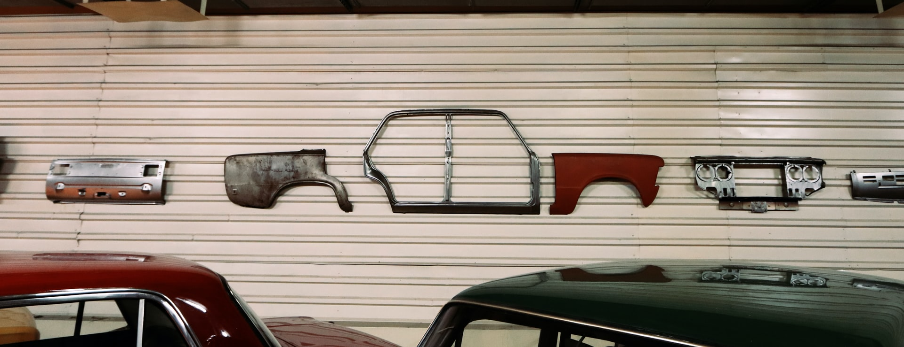

Talking about html, CSS and Javascript. What springs to mind for me, is if we have look at the common car. We can envisage a base level, made up of many different bits and parts, attached to our chassis. This is our Html level. Html is like our foundation: the chassis, the windows, the engine, and all the bits and parts that make a car a car.

The next level to look at revolves around what we look at! How our car looks and feels on the outside and on the inside!!!
The colour of the whole and of each part, the style, textures inside and outside the car, add to the whole experience of the cars aesthetic.
This is our CSS level
A new set of rims, a roof rack, just a light touch of style added to our car.
But can make our experience in the car very different. So far we have all of the bits and pieces to make this car work and look good doing it.
Then we come to our connector, activator and/or smarts. The advances in car mechanics and technology. Taking our basic mechanical setup and applying intelligence.
This is our Javascript and where it takes centre stage. The new improvements in auto-engineering, enabling smarter safer, more effiecient vehicles.
The end product is a vehicle with solid foundations, that looks and feels great, and also has a multitude of smart advances to provide a smooth and safe drive, with driver-friendly enhancements for a better all-round driver experiece
Control flow and loops
Simply it describes how our computer reads and actions code from top to bottom. It starts from the first line and ends at the last line. Unless we alter the course of flow, through an input statement, like these stairs below, will just keep heading on down!
we could look at an standard operating procedure (SOP), written to explain how to make a coffee. In most cases there is a sequentuial order to this process. However, there will be instances where an alternate route will need to be taken: type of coffee, of milk, sugar/ no sugar, extra hot or cold water, water or milk on the side - this list is extensive.
These flows are still a part of the control flow, but will be determied prior to the making of the coffee. otherwise... standard coffee. 
Looping or iterative statements repeat the same action to get a result. This type of flow is designed to meet criteria or trigger-points to acheive a set result. Very very handy tools to utilise!
What is the DOM
Document Object Model - an interface to enable navigation of a webpage. To hone in on exact elements, to add, delete or
 view changes in real time of a webpage. With the ability to search for anything, any element as well as make amendments on the fly, this is a super useful tool to learn.
view changes in real time of a webpage. With the ability to search for anything, any element as well as make amendments on the fly, this is a super useful tool to learn.
So what are functions?
Functions make life easier for a programmer. They are a set of code that can be re-used over and over in different instances for a particular purpose. Fucntions can be used in a variety of ways. Getting familiar with how versitle functions are and what they can be used to do, seems like a forever task. They can enable the simplifing of code, as well as lead you down a dark matrix like looking hole.